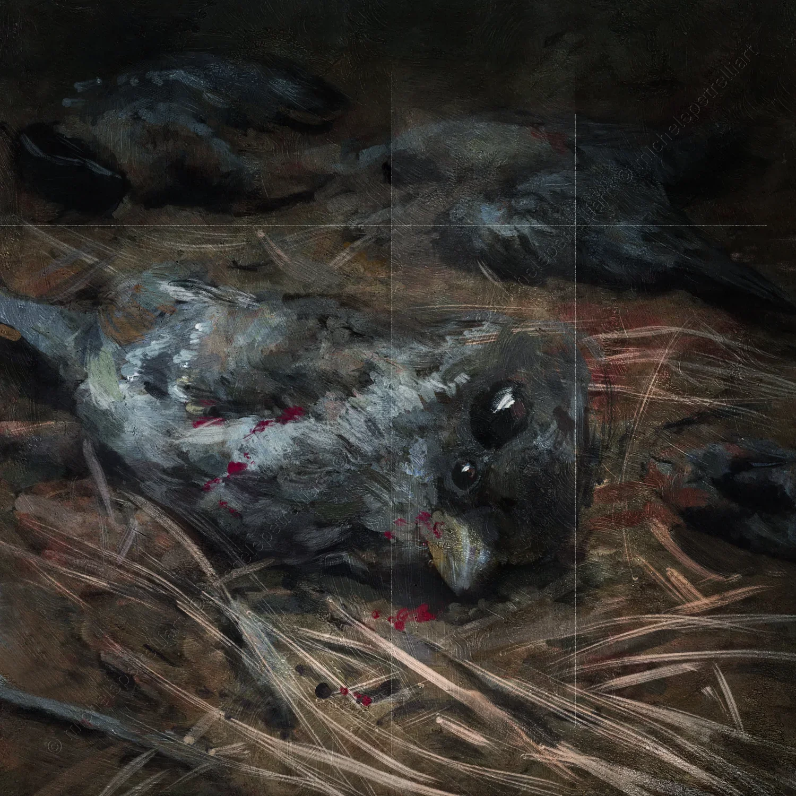

4219 The Massacre of the Innocents
Winter in this pine forest manifests as a static force, a suspended atmosphere where the frost seems to crystallize the breath of the trees and the fate of the creatures dwelling within. I emerge from the shadows of the trunks alongside my sister; I feel her hand resting on my shoulder, a physical contact establishing a profound connection at the exact moment my innocence is lost. We both remain motionless, witnesses to an event that transforms the woods into a perimeter of radical observation.
On the ground, the expanse of slaughtered sparrows interrupts the dark texture of the pine needles and damp earth. Those feathers, once instruments of a chaotic and vital flight, now lie as scraps of an indifferent mechanics. I look for the first time into those deep, lifeless eyes, perceiving the shock of matter that has ceased to vibrate. It is my frontal encounter with death, an event imposing itself as physical evidence, devoid of any justification.
In the background, other boys act as terminals for a gratuitous cruelty. Their wooden slingshots point upward, seeking new trajectories of destruction, while the pleasure of the kill guides their every gesture. In this scenario, my Radical Non-dual Determinism manifesto finds its most extreme application: I recognize that this violence departs from any law of natural necessity or survival. It is the manifestation of a deterministic wave acting through them, a sequence of interdependencies playing against them, stripping them of any real choice. Those children are cogs in a system that demands their ruthlessness, executors of a movement of matter that flows through them without the possibility of opposition. The pine forest becomes my laboratory: here, consciousness recognizes the total absence of free will even within evil, where my horror as a victim and the ferocity of the executioners are vibrations of the same interconnected substance.
This license does not allow you to modify or use these images for commercial purposes.
You are allowed to share them only by clearly crediting and tagging the author.